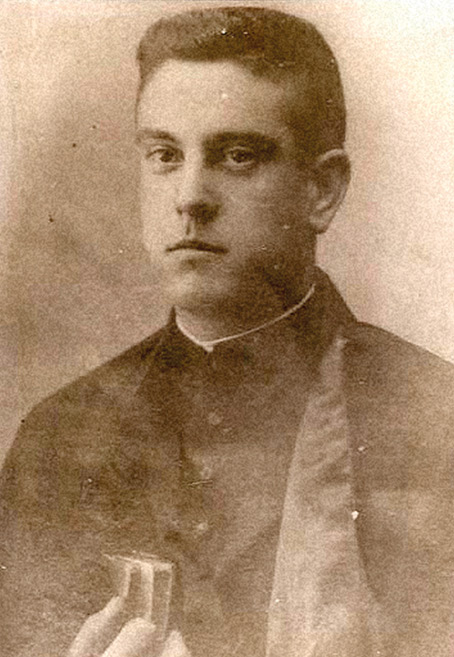
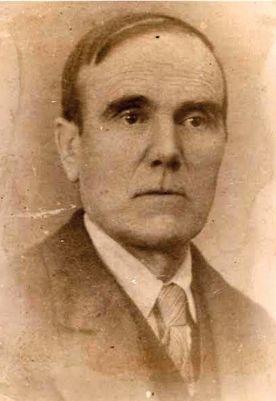

D. Manuel Calleja Montero

Nacido en Madrid el 15 de septiembre de 1911, D. Manuel Calleja realizó sus estudios en el seminario bajo la dirección espiritual del padre Hermógenes Vicente, también mártir. Fue ordenado sacerdote en 1935 y celebró su primera misa el 16 de junio en el convento de los Mercedarios de la calle Silva, de Madrid. Su único destino sacerdotal fue la Parroquia de Santo Domingo de Silos, en Pinto, donde también ejerció de capellán de las Ursulinas del Colegio de San José. Tenía veinticuatro años cuando dio su vida por la fe.
D. José Calleja Teruel

Nacido en Arnedillo (Logroño) el 17 de marzo de 1883, D. José Calleja era hombre de profunda fe. Dada la gran tensión que se vivía en aquel tiempo, acompañaba a su hijo a todas partes, incluso para ir a celebrar la misa con las religiosas. Días antes del martirio, padre e hijo habían sido apedreados e insultados por la calle. El 27 de julio de 1936 fue detenido junto a su hijo y otros vecinos. Imploró ser fusilado antes que D. Manuel, pero no fue atendido. Tenía cincuenta y tres años.
El martirio (27 de julio de 1936)
El 27 de julio de 1936 ambos fueron encerrados, junto con otros vecinos, en un teatro situado enfrente de la iglesia. El alcalde, ante la llegada de milicias de Madrid, temía por la vida de los prisioneros y los soltó.
A D. Manuel y a su padre se les indicó que se dirigiesen hacia la estación. Parece que el joven sacerdote intentó salvar a los demás distrayendo a los milicianos. Los milicianos atraparon al joven párroco y a su padre, los obligaron a desnudarse y los asesinaron en el kilómetro 23 de la carretera de Badajoz. No escucharon la petición del padre que imploró ser fusilado antes que su hijo.
Ambos están enterrados en el Cementerio Viejo de Pinto. Su causa de canonización, dentro de la Causa de Cipriano Martínez Gil y compañeros, se encuentra en la fase romana desde diciembre de 2018. Más información en Causa Mártires (Archidiócesis de Madrid).